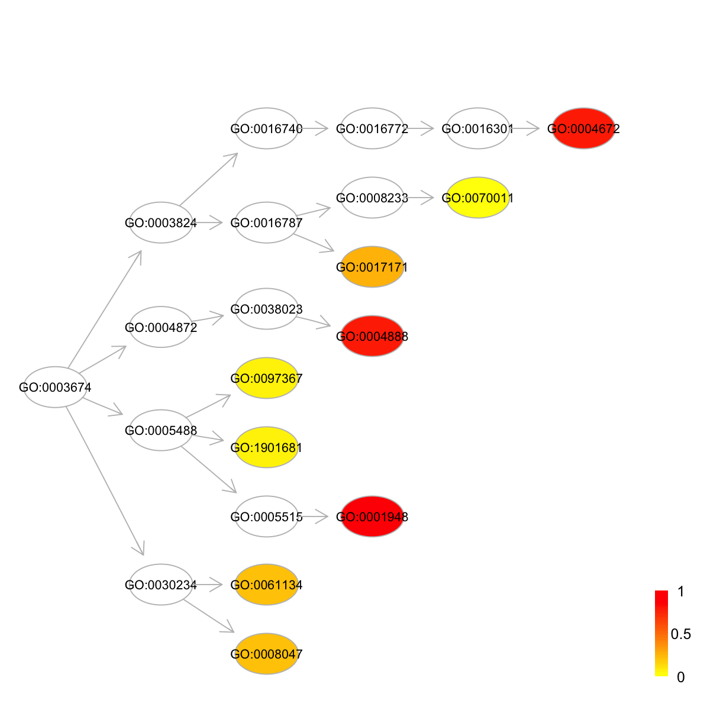

dcAlgoPredict is supposed to predict ontology terms given domain
architectures (including individual domains). It involves 3 steps: 1)
splitting an architecture into individual domains and all possible
consecutive domain combinations (viewed as component features); 2)
merging hscores among component features; 3) scaling merged hscores
into predictive scores across terms.
dcAlgoPredict(data, RData.HIS = c("Feature2GOBP.sf", "Feature2GOMF.sf", "Feature2GOCC.sf",
"Feature2HPPA.sf", "Feature2GOBP.pfam", "Feature2GOMF.pfam", "Feature2GOCC.pfam",
"Feature2HPPA.pfam", "Feature2GOBP.interpro", "Feature2GOMF.interpro", "Feature2GOCC.interpro",
"Feature2HPPA.interpro"), merge.method = c("sum", "max", "sequential"), scale.method = c("log",
"linear", "none"), feature.mode = c("supradomains", "domains"), slim.level = NULL,
parallel = TRUE, multicores = NULL, verbose = T, RData.location = "http://dcgor.r-forge.r-project.org/data")
\sum_{i=1}{\frac{R_{i}}{i}},
where R_{i} is the i^{th} ranked highest hscore\frac{S - S_{min}}{S_{max} - S_{min}}, where
S_{min} and S_{max} are the minimum and maximum values for
Ssource("http://bioconductor.org/biocLite.R");
biocLite(c("foreach","doMC")). If not yet installed, this option will
be disabledRData.location=".". If RData to load is already part of package
itself, this parameter can be ignored (since this function will try to
load it via function data first)a named list of architectures, each containing predictive scores
none
# 1) randomly generate 5 domains and/or domain architectures x <- dcRDataLoader(RData="Feature2GOMF.sf")'Feature2GOMF.sf' (from http://dcgor.r-forge.r-project.org/data/Feature2GOMF.sf.RData) has been loaded into the working environmentdata <- sample(names(x$hscore), 5) # 2) get predictive scores of all predicted terms for this domain architecture ## using 'sequential' method (by default) pscore <- dcAlgoPredict(data=data, RData.HIS="Feature2GOMF.sf", parallel=FALSE)Start at 2014-10-28 17:46:16 'Feature2GOMF.sf' (from http://dcgor.r-forge.r-project.org/data/Feature2GOMF.sf.RData) has been loaded into the working environment Predictions for 5 architectures using 'sum' merge method, 'log' scale method and 'supradomains' feature mode (2014-10-28 17:46:16)... 1 out of 5 (2014-10-28 17:46:16) 2 out of 5 (2014-10-28 17:46:16) 3 out of 5 (2014-10-28 17:46:16) 4 out of 5 (2014-10-28 17:46:16) 5 out of 5 (2014-10-28 17:46:16) End at 2014-10-28 17:46:16 Runtime in total is: 0 secs## using 'max' method pscore_max <- dcAlgoPredict(data=data, RData.HIS="Feature2GOMF.sf", merge.method="max", parallel=FALSE)Start at 2014-10-28 17:46:16 'Feature2GOMF.sf' (from http://dcgor.r-forge.r-project.org/data/Feature2GOMF.sf.RData) has been loaded into the working environment Predictions for 5 architectures using 'max' merge method, 'log' scale method and 'supradomains' feature mode (2014-10-28 17:46:16)... 1 out of 5 (2014-10-28 17:46:16) 2 out of 5 (2014-10-28 17:46:16) 3 out of 5 (2014-10-28 17:46:16) 4 out of 5 (2014-10-28 17:46:16) 5 out of 5 (2014-10-28 17:46:16) End at 2014-10-28 17:46:16 Runtime in total is: 0 secs## using 'sum' method pscore_sum <- dcAlgoPredict(data=data, RData.HIS="Feature2GOMF.sf", merge.method="sum", parallel=FALSE)Start at 2014-10-28 17:46:16 'Feature2GOMF.sf' (from http://dcgor.r-forge.r-project.org/data/Feature2GOMF.sf.RData) has been loaded into the working environment Predictions for 5 architectures using 'sum' merge method, 'log' scale method and 'supradomains' feature mode (2014-10-28 17:46:17)... 1 out of 5 (2014-10-28 17:46:17) 2 out of 5 (2014-10-28 17:46:17) 3 out of 5 (2014-10-28 17:46:17) 4 out of 5 (2014-10-28 17:46:17) 5 out of 5 (2014-10-28 17:46:17) End at 2014-10-28 17:46:17 Runtime in total is: 1 secs# 3) advanced usage ## a) focus on those terms at the 2nd level (general) pscore <- dcAlgoPredict(data=data, RData.HIS="Feature2GOMF.sf", slim.level=2, parallel=FALSE)Start at 2014-10-28 17:46:17 'Feature2GOMF.sf' (from http://dcgor.r-forge.r-project.org/data/Feature2GOMF.sf.RData) has been loaded into the working environment Predictions for 5 architectures using 'sum' merge method, 'log' scale method and 'supradomains' feature mode (2014-10-28 17:46:17)... 1 out of 5 (2014-10-28 17:46:17) 2 out of 5 (2014-10-28 17:46:17) 3 out of 5 (2014-10-28 17:46:17) 4 out of 5 (2014-10-28 17:46:17) 5 out of 5 (2014-10-28 17:46:17) Focus on predicted terms at '2' slim level(s) End at 2014-10-28 17:46:17 Runtime in total is: 0 secs## b) visualise predictive scores in the ontology hierarchy ### load the ontology g <- dcRDataLoader("onto.GOMF", verbose=FALSE) ig <- dcConverter(g, from='Onto', to='igraph', verbose=FALSE) ### do visualisation for the 1st architecture data <- pscore[[1]] subg <- dnet::dDAGinduce(ig, nodes_query=names(data), path.mode="shortest_paths") dnet::visDAG(g=subg, data=data, node.info="term_id")
dcAlgoPredict.r
dcAlgoPredict.Rd
dcAlgoPredict.pdf
dcRDataLoader, dcConverter,
dcAlgoPredictMain
){kind=link}